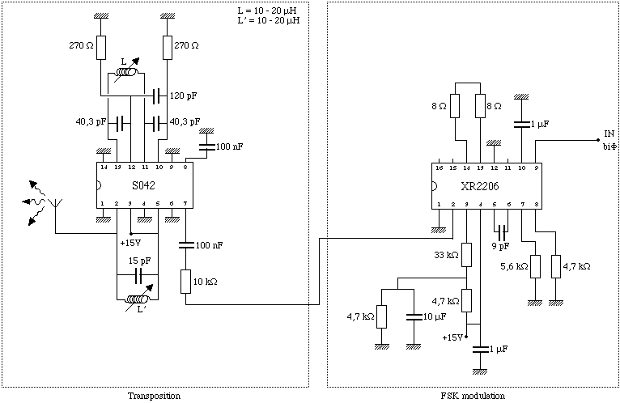
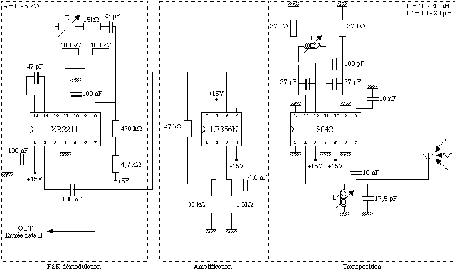
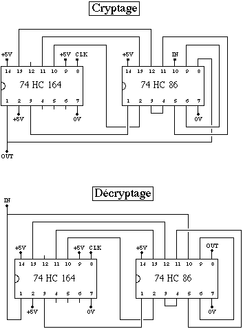

Up:
Comment faire son propre
Previous:
D Principe de l'antenne
E Montages lectriques

Figure
E.1
: Schma lectrique du montage metteur

Figure
E.2
: Schma lectrique du montage rcepteur

Figure
E.3
: Schmas lectriques des montages crypteur et dcrypteur
Denis Arnaud
11/25/1997